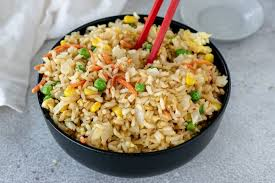

Fried rice recipe

Fried Rice: A Tradition of Flavor and Affordability
Fried rice is a versatile and affordable dish that combines cooked rice with an assortment of vegetables, proteins, and flavorful seasonings, often using soy sauce or spices. Originating from Asian culinary traditions, particularly Chinese cuisine, it has become a global favorite due to its simplicity and adaptability. Fried rice is deeply rooted in the practice of minimizing waste by repurposing leftover ingredients, making it a cost-effective and resourceful meal. Its rich tradition and widespread appeal reflect its ability to cater to diverse tastes while remaining budget-friendly.
Ingredients:
- Cooked rice (preferably day-old)
- Eggs
- Soy sauce
- Vegetables (e.g., peas, carrots, bell peppers, green onions)
- Garlic and ginger
- Protein options (e.g., chicken, shrimp, beef, tofu)
- Cooking oil or butter
- Sesame oil (optional, for added flavor)
- Salt and pepper
steps:
- Heat cooking oil in a large pan or wok over medium-high heat.
- Add garlic and ginger, sauté until fragrant.
- Push the garlic and ginger to the side and scramble the eggs in the pan.
- Add your choice of protein and cook until done.
- Toss in vegetables and stir-fry for a few minutes until tender.
- Add cooked rice and stir everything together.
- Pour soy sauce and sesame oil (if using) over the mixture, stirring to coat evenly.
- Season with salt and pepper to taste.
- Cook for another 2-3 minutes, ensuring everything is well-mixed and heated.
- Garnish with green onions and serve hot.